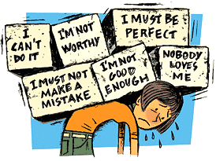

DBIT-Counselling
Don Bosco Institute Of Technology
COUNSELLING DEPARTMENT
Home
About Us
Take a test !
Food for thought !
Contact Us
Admin
Low self- esteem
 Self-esteem is your opinion of yourself. People with healthy self-esteem like themselves and value their achievements. While everyone lacks confidence occasionally, people with low self-esteem feel unhappy or unsatisfied with themselves most of the time. This can be remedied but it takes attention and daily practise to boost self-esteem. See your doctor for information, advice and referral if you 're having trouble improving your self-esteem or if low self-esteem is causing problems such as depression. Characteristics of low self-esteem Typically, a person with low self-esteem:
• Is extremely critical of themselves
• Downplays or ignores their positive qualities
• Judges themselves to be inferior to their peers
• Uses negative words to describe themselves such as stupid, fat, ugly or unlovable
• Has discussions with themselves (this is called ‘self talk ') that are always negative, critical and self blaming
• Assumes that luck plays a large role in all their achievements and doesn 't take the credit for them
• Blames themselves when things go wrong instead of taking into account other things over which they have no control such as the actions of other people or economic forces
• Doesn 't believe a person who compliments them.
Low self-esteem and quality of life
A low self-esteem can reduce the quality of a person's life in many different ways, including:
• Negative feelings − the constant self-criticism can lead to persistent feelings of sadness, depression, anxiety, anger, shame or guilt.
• Relationship problems − for example they may tolerate all sorts of unreasonable behaviour from partners because they believe they must earn love and friendship, cannot be loved or are not loveable. Alternatively, a person with low self-esteem may feel angry and bully other people.
• Fear of trying − the person may doubt their abilities or worth and avoid challenges.
• Perfectionism − a person may push themselves and become an over-achiever to ‘atone ' for what they see as their inferiority.
• Fear of judgement − they may avoid activities that involve other people, like sports or social events, because they are afraid they will be negatively judged. The person feels self-conscious and stressed around others and constantly looks for ‘signs ' that people don 't like them.
• Low resilience − a person with low self-esteem finds it hard to cope with a challenging life event because they already believe themselves to be ‘hopeless '.
• Lack of self-care − the person may care so little that they neglect or abuse themselves, for example, drink too much alcohol.
• Self-harming behaviours − low self-esteem puts the person at increased risk of self-harm, for example, eating disorder, drug abuse or suicide.